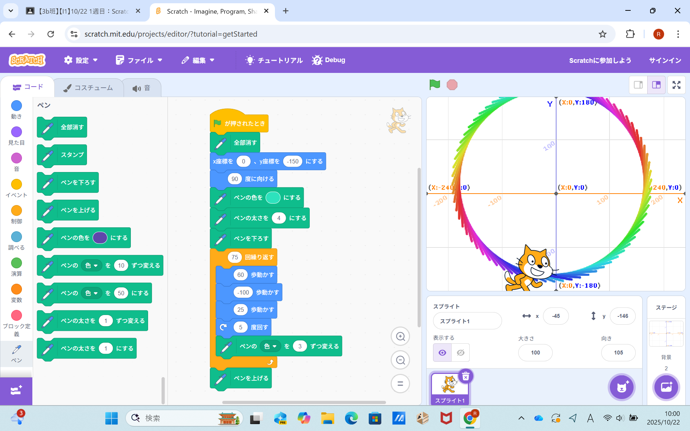
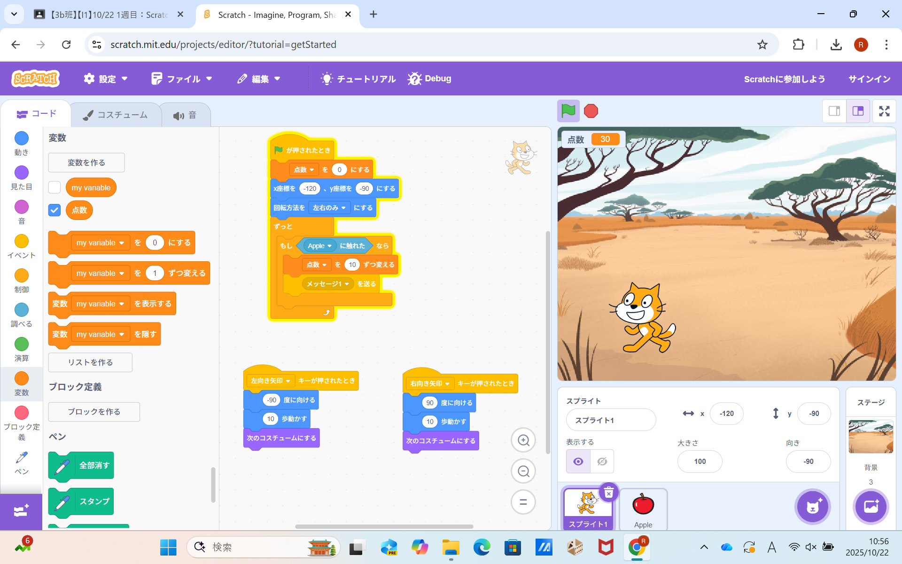

1週目のレポート ： 公大高専１年実習I-1
3b班34番 平野花佳
第1週目
1-1 サイエンスアート

1.内容
学習した内容を説明する文章を
スクラッチの猫をプログラムで操作する。ｘ軸、ｙ軸で初めの位置（0,-150）を決め、そこから60歩歩く、-100歩歩く
25歩歩く、五度回す、ペンの色を3変えるを75回繰り返した。 2.感想
スクラッチを使うのも初めてで、ある程度の操作は知っていたけどこんな使い方ができることを知って、
とても驚きました。また、どんなデザインにしたいか考えながらプロムラムを作るのが楽しかったです。
1-2 ゲーム

1.内容
様々な速さで落ちてくるリンゴを矢印を動かして猫でとる。
リンゴを一つとるごとに点が10点ずつ増える。
2.感想
簡単なゲームをつくったのも初めてで、何がどうなって動いているのか初めは全く分からなかったが
プログラミングをしていくにつれて徐々に理解することができました。また、自分的にはうまくゲームを作ることができうれしかったです。
1-3 ホームページ作成
私のホームページ
1.内容
GitHubを使ってタイトルをWEB実験に、せつめいはまだに自分自身の説明を記入し
私のホームページを作成した。ホームページには自分の特徴・特技、趣味・嗜好をかいた。
2.感想
ホームページを作ったことがなく、どうやって作られているのかも知らなかったけれど、
自分が書いたことが本当にWEB上に反映されて驚いたし、楽しかったです。
各ページへのリンク
1週目のレポート
2週目のレポート
3週目のレポート
私のホームページ